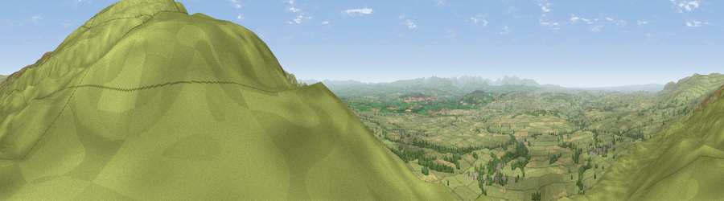

Viewpoint near Melmerby
#1854 in England · top 2% of its area beats it · near MelmerbyWhere it is
The exact computed spot (NY 63150 38175). Click the marker for map links.
The view, rendered

A 360° render of this exact spot computed from the terrain model, tree cover and land cover — summer colours, afternoon light, calibrated against photographs of famous viewpoints. Real trees, hedges and buildings will differ in detail.
The panorama
Grey silhouette: terrain skyline in each direction (720 bearings, Earth curvature and refraction included). Dashed green: skyline with trees (+15 m) and buildings (+8 m) as obstacles. Blue strip: how far the ground is visible on each bearing.
Where the view opens
Wedge length = distance to the farthest visible ground on that bearing (vegetation-aware). Rings at 10, 25 and 50 km.
What fills the view
85% grassland · 7% woodland · 7% cropland ·
Angular shares of the visible panorama (visual magnitude), not map area. Landscape diversity 0.24 (0–1 Shannon).
Key numbers
More beautiful places nearby
The staircase of upgrades: each row has a higher view potential than everything closer. Driving times are estimates from straight-line distance, calibrated against real road routing — check an actual route before setting out.
| Place | Direction | Drive | Score |
|---|---|---|---|
| Viewpoint near Melmerby | ENE · 2 km | ~4 min | 78.1 |
| Cross Fell | SE · 7 km | ~14 min | 78.7 |
| Viewpoint near Plumpton | WSW · 12 km | ~23 min | 78.9 |
| Barrock Fell | WNW · 19 km | ~32 min | 81.1 |
| Viewpoint near Watermillock | SW · 24 km | ~39 min | 82.6 |
| Viewpoint near Watermillock | SW · 24 km | ~40 min | 83.5 |
| Viewpoint near Legburthwaite | SW · 37 km | ~56 min | 83.8 |
| Viewpoint near Legburthwaite | SW · 37 km | ~56 min | 84.5 |
54.73719, -2.57384 · source: screening · position refined by local search. Computed location — check access rights before visiting.